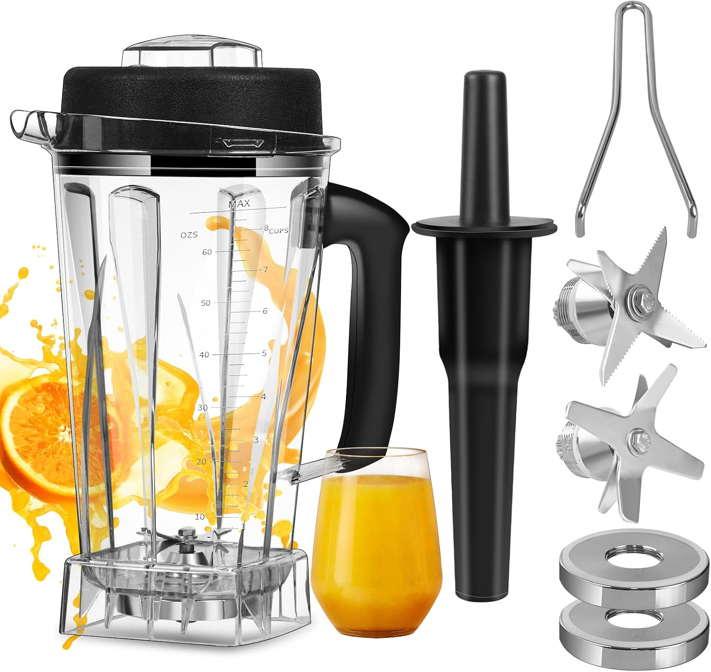

Fits Vitamix C-Series. This is a compatible replacement part, not an OEM Vitamix product.

This is a compatible replacement part, not an OEM Vitamix product.
Check your blender model number (usually printed under the base). Fits Vitamix C-Series. If your model is not listed, message us on WhatsApp — we reply within 24–48 hours.
No. BlendCraft parts are compatible replacement parts, engineered to match OEM performance at a lower cost.
Yes. All cups, containers and gaskets are BPA-free and food-safe.
Yes. Every part is designed for exact-fit compatibility with the blender models listed.
Yes. We offer 30-day hassle-free returns.
Orders are processed within 1–2 business days. Most orders arrive within 5–10 business days in the US, or 7–15 business days internationally. All orders include tracked worldwide shipping.